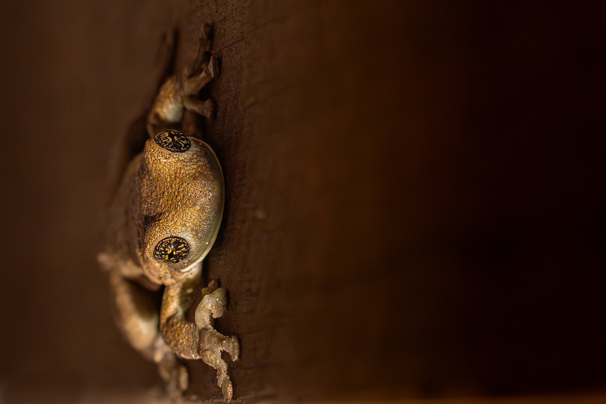
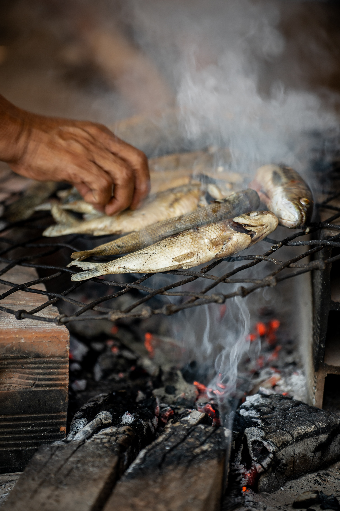
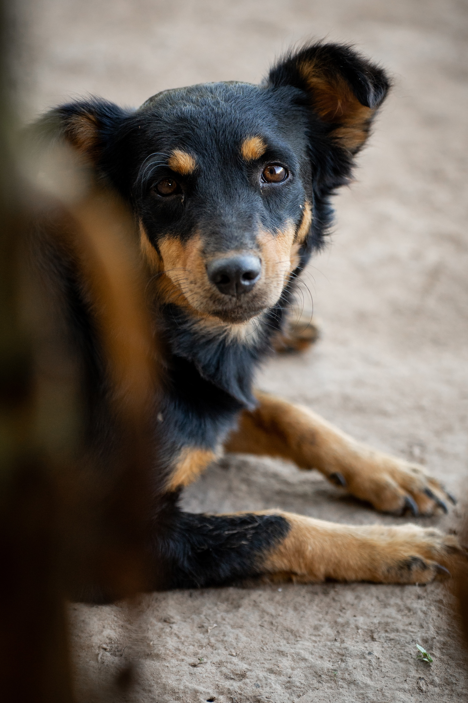
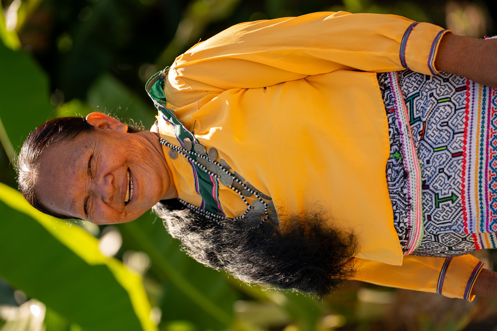
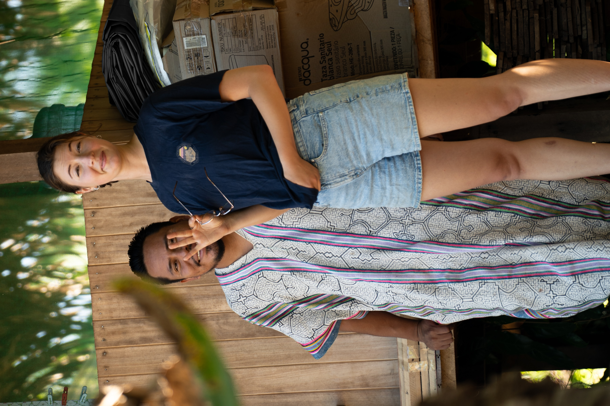
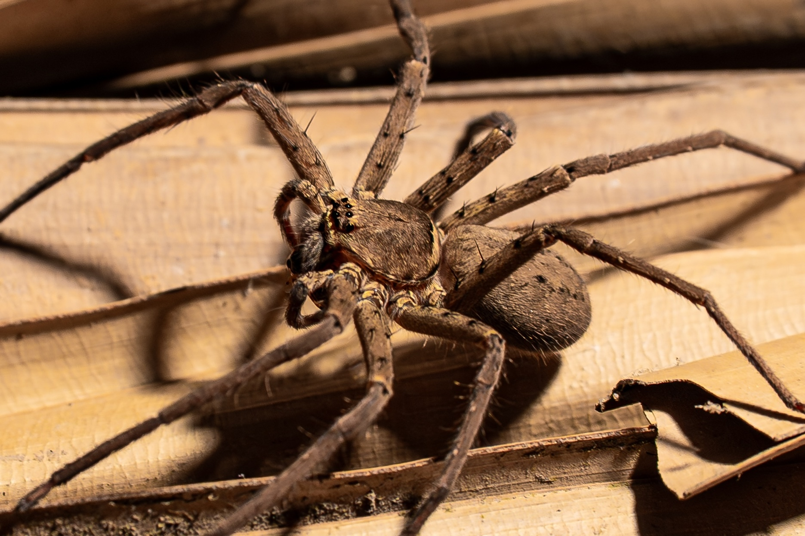

Where the road from the mountains meets the Amazon basin. Pucallpa is a frontier city — moto-taxis buzzing past fruit stands, the Ucayali River stretching wide, and Shipibo artisans weaving stories into cloth.















